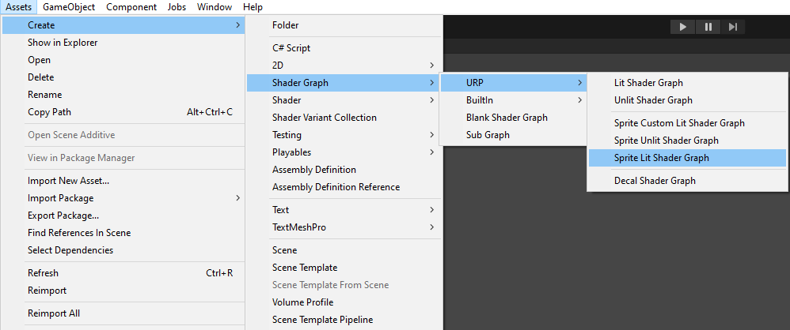
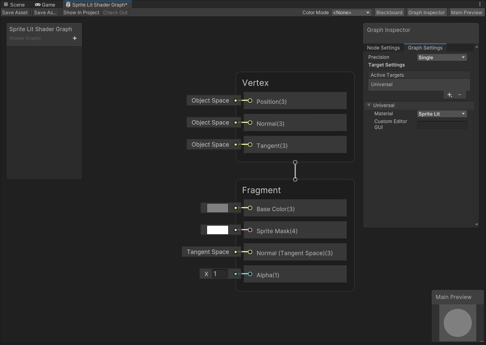
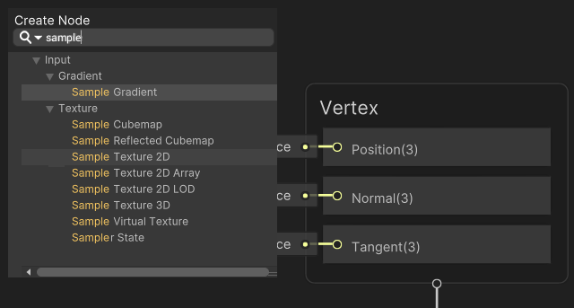
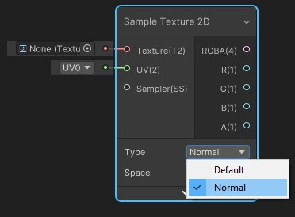
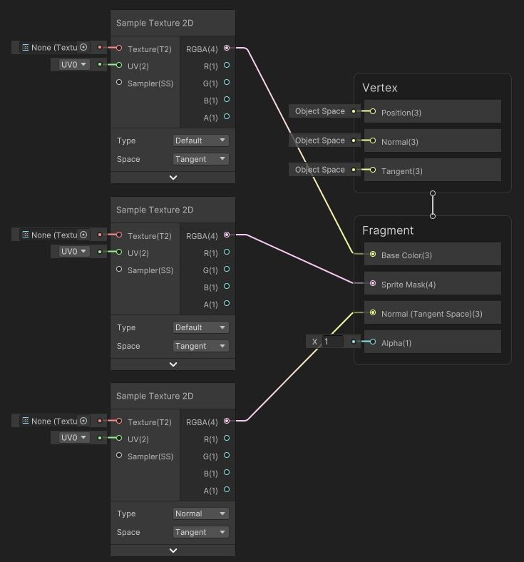
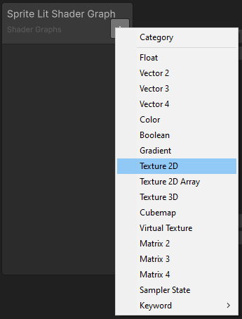
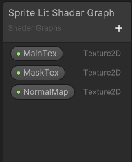
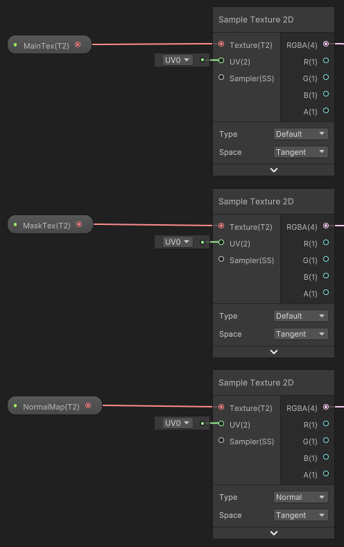
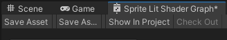

Create a shaderA program that runs on the GPU. More info
See in Glossary that reacts to 2D lights when applied to materials.
Create a new asset by selecting Assets > Create > Shader Graph > URP > Sprite Lit Shader Graph. The Shader Graph asset is then created in the asset window.

Double-click the new asset to open the Shader Graph.

Create three Sample Texture 2D Nodes by right-clicking on the Shader Graph window and selecting Create Node, then search for and select the Sample Texture 2D option.

Change the Type of one of the Nodes to Normal.

Attach the RGBA(4) Output Slot of the Default Type Nodes as shown below. Note that you should attach the Normal Type Node’s Output Slot to the Normal(Tangent Space)(3) Input Slot.

Create three Texture 2D properties by selecting the + on the Blackboard, and then select Texture 2D. Name them ‘MainTex’, ‘MaskTex’, and ‘NormalMap’ for this example.
 
Drag each of the Texture 2D properties onto the editor window. Attach each of the properties to the Input Slots of the Sample Texture 2D Nodes as shown below. Note that the ‘NormalMap’ property must be attached to the Normal Type Node only.

Select Save Asset to save the Shader.

You can now apply the newly built Shader to materials.